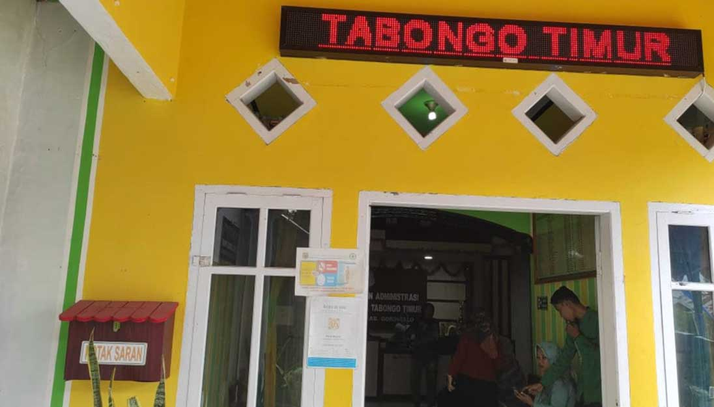
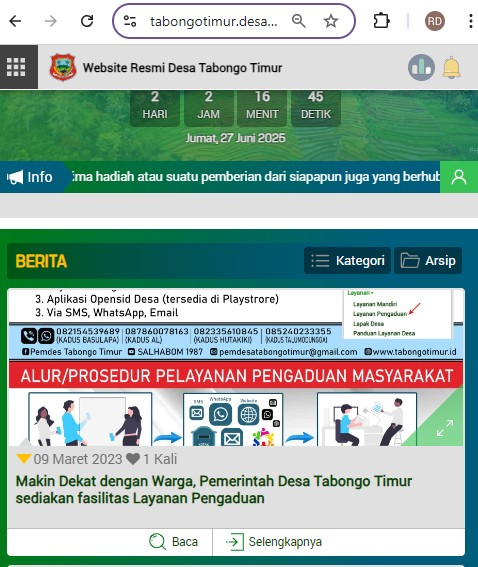

<div class="row justify-content-center mb-2 mb-md-4 g-2 g-md-4">
    <div class="col-12">
        <div class="card">
            <div class="card-header bg-info ch1"><span class="badge rounded-pill bg-primary">III.1.1</span><a
                    href="https://drive.google.com/drive/folders/1jJDeUEKYefeczooFRIoeVVLfHTZ9ewAF?usp=drive_link">Prosedur
                    Baku Penerimaan, Penanganan Dan Tindaklanjut Pengaduan</a></div>
            <div class="card-body p-2 p-md-4">
            </div>
        </div>
    </div>
    <div class="col-md-6">
        <div class="card" data-bss-disabled-mobile="true" data-aos="fade-up" data-aos-duration="800">
            <div class="card-header bg-info ch1"><span class="badge rounded-pill bg-primary">III.1.2</span><a
                    href="https://drive.google.com/drive/folders/1f1TbE_pHS_XzfnKY4G4axszK54RwnXbl?usp=drive_link"
                    target="_blank">Saluran Penerimaan Pengaduan Digital Website</a></div>
            <div class="card-body p-2 p-md-4"></div>
            <div class="card-footer text-center"><a href="https://www.tabongotimur.desa.id/pengaduan" type="button"
                    class="costumbutton1" target="_blank"><span class="costumbutton1-text"><span>Lihat Layanan Pengaduan
                            di Website</span></span><span class="costumbutton1-icon"><i
                            class="fas fa-arrow-right"></i></span></a></div>
        </div>
    </div>
    <div class="col-md-6">
        <div class="card" data-bss-disabled-mobile="true" data-aos="fade-up" data-aos-duration="800">
            <div class="card-header bg-info ch1"><span class="badge rounded-pill bg-primary">III.1.2</span><a
                    href="https://drive.google.com/drive/folders/1f1TbE_pHS_XzfnKY4G4axszK54RwnXbl?usp=drive_link"
                    target="_blank">Saluran Penerimaan Pengaduan Konvensional</a></div>
            <div class="card-body p-2 p-md-4"></div>
        </div>
    </div>
    <div class="col-md-6">
        <div class="card" data-bss-disabled-mobile="true" data-aos="fade-up" data-aos-duration="800">
            <div class="card-header bg-info ch1"><span class="badge rounded-pill bg-primary">III.1.3</span><a
                    href="https://drive.google.com/drive/folders/1QYToiWJ6mfKJQD6X6hH6tmqBGi76H8Ge?usp=drive_link"
                    target="_blank">Publikasi Prosedur Baku Dan Saluran Pengaduan</a></div>
            <div class="card-body p-2 p-md-4"></div>
        </div>
        <ul class="list-group mt-2 mt-md-4">
            <li class="list-group-item" data-bss-disabled-mobile="true" data-aos="fade-up" data-aos-duration="800"
                style="padding-left:60px;"><span class="badge rounded-pill bg-primary position-absolute"
                    style="margin:3px 0 0 -50px;">III.1.5</span><a
                    href="https://drive.google.com/drive/folders/1ie9MNKgTUezqk2dqVYrHpbYxBK5RbHr2?usp=drive_link"
                    target="_blank">Rekapitulasi dan progres tindak lanjut yang di diskusikan secara berkala di forum
                    internal pemerintah desa</a>
            </li>
            <li class="list-group-item" data-bss-disabled-mobile="true" data-aos="fade-up" data-aos-duration="800"
                style="padding-left:60px;"><span class="badge rounded-pill bg-primary position-absolute"
                    style="margin:3px 0 0 -50px;">III.1.6</span><a
                    href="https://drive.google.com/drive/folders/16Vg52dZsLfmQIVnQl6niNiZ8O8e4YXSY?usp=drive_link"
                    target="_blank">Bukti anggota BPD yang mengetahui rekap dan tindak lanjut pengaduan masyarakat.
                    (Kuisioner atau video wawancara)</a>
            </li>
            <li class="list-group-item" data-bss-disabled-mobile="true" data-aos="fade-up" data-aos-duration="800"
                style="padding-left:60px;"><span class="badge rounded-pill bg-primary position-absolute"
                    style="margin:3px 0 0 -50px;">III.1.7</span><a
                    href="https://drive.google.com/drive/folders/1Zbt2KarGctcEc8Oqj8cbssV7Rh6vYEK6?usp=drive_link"
                    target="_blank">Random check terhadap unsur masyarakat yang menyampaikan aduan yang sudah selesai
                    (Kuisioner atau video wawancara, antara lain berisi harapan : masyarakat tau bahwa aduannya telah di
                    TL)</a></li>
        </ul>
    </div>
    <div class="col-md-6">
        <div class="card" data-bss-disabled-mobile="true" data-aos="fade-up" data-aos-duration="800">
            <div class="card-header bg-info ch1"><span class="badge rounded-pill bg-primary">III.1.4</span><a
                    href="https://drive.google.com/drive/folders/1R65ES-ZzQVENx2oOWge7Xm9h3uXovTH4?usp=drive_link"
                    target="_blank">Media Informasi Terkait Prosedur Dan Saluran Pengaduan</a></div>
            <div class="card-body p-2 p-md-4"></div>
            <div class="card-footer text-center"><a
                    href="https://www.tabongotimur.desa.id/artikel/2023/03/09/makin-dekat-dengan-warga-pemerintah-desa-tabongo-timur-sediakan-fasilitas-layanan-pengaduan"
                    type="button" class="costumbutton1" target="_blank"><span class="costumbutton1-text"><span>Lihat
                            Informasi Prosedur Dan Saluran Pengaduan</span></span><span class="costumbutton1-icon"><i
                            class="fas fa-arrow-right"></i></span></a></div>
        </div>
    </div>
</div>